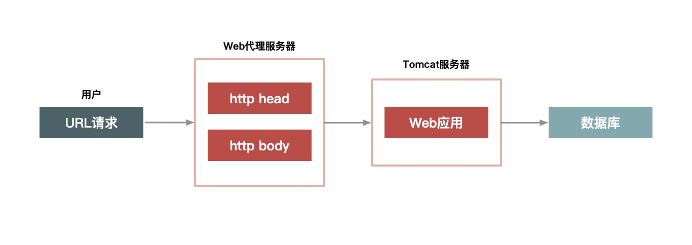
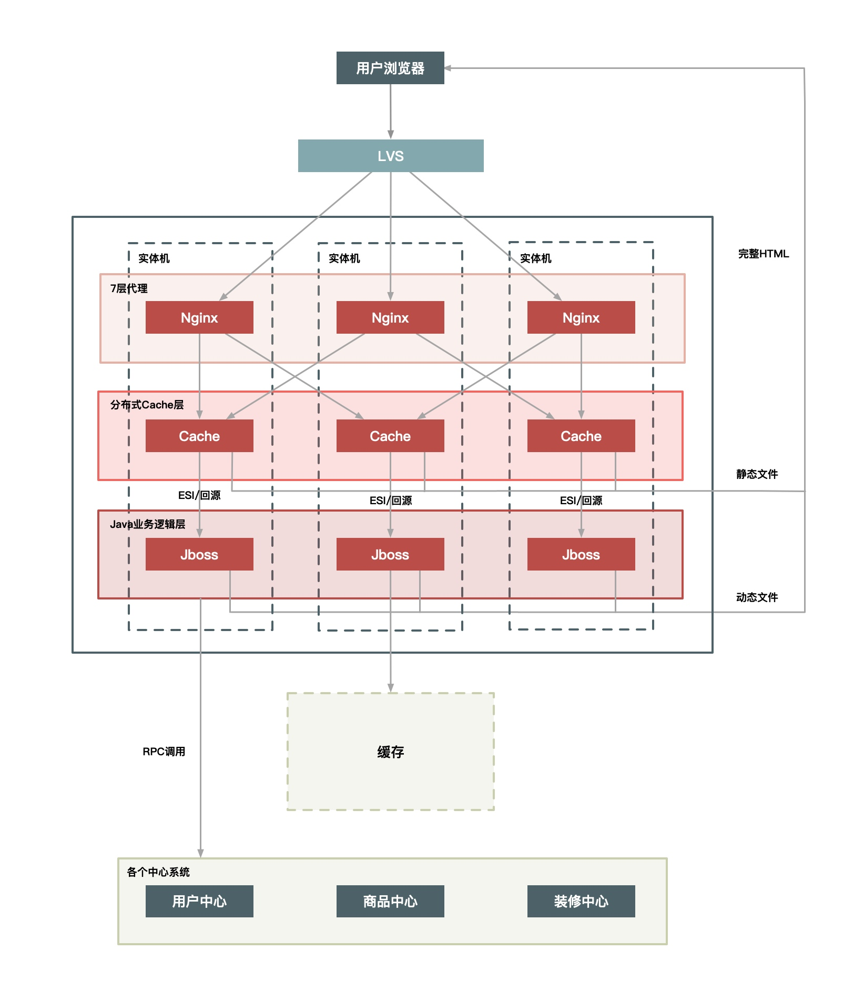
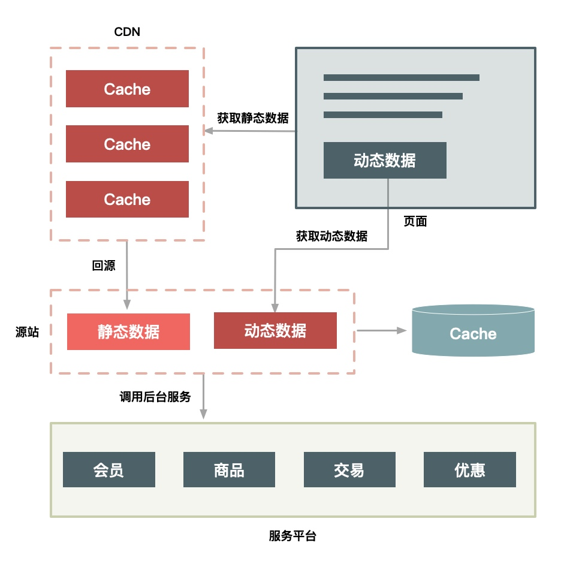

“快”抽象起来讲，就只有两点，一点是提高单次请求的效率，一点是减少没必要的请求
动静数据
“动态数据”和“静态数据”的主要区别就是看页面中输出的数据是否和 URL、浏览者、时间、地域相关，以及是否含有 Cookie 等私密数据
缓存静态数据
-
静态数据存放在离用户最近的地方：常见的就三种，用户浏览器里、CDN 上或者在服务端的 Cache 中
-
静态化改造就是直接缓存HTTP链接：静态化改造是直接缓存 HTTP 连接而不是仅仅缓存数据，如下图所示，Web 代理服务器根据请求 URL，直接取出对应的 HTTP 响应头和响应体然后直接返回，这个响应过程简单得连 HTTP 协议都不用重新组装，甚至连 HTTP 请求头也不需要解析。
 -
让谁来缓存静态数据也很重要，Web 服务器（如 Nginx、Apache、Varnish）也更擅长处理大并发的静态文件请求。
如何做动静分离
- URL 唯一化：可以让缓存HTTP连接时方便
- 分离浏览器相关的因素。浏览者相关的因素包含是否已登录，以及登录身份的这些服务单独拆分
- 分离时间因素：服务端输出的时间也通过动态请求获取
- 异步化地域因素：详情页中的地域相关的信息可以通过异步获取
- 去掉Cookie ：在缓存的静态数据中不含有Cookie
动态数据处理
通过缓存处理静态的数据，动态数据可以通过ESI（Edge Side Include） 和 CSI （Client Side Include）方案
- ESI ：在Web代理服务器上做动态内容请求，并将请求插入到静态页面中，当用户拿到的页面就是一个完整的页面了
- CSI：单独发起异步的JavaScript请求，从服务器上获取动态资源
动静分离的服务架构
根据架构的复杂度，有三种方案可选
- 实体机单机部署
- 同一Cache层部署
- 上CDN
实体机单机部署
将虚拟机改为实体机，以增大 Cache 的容量，并且采用了一致性 Hash 分组的方式来提升命中率

优点
- 没有网络瓶颈，能够使用大内存
- 能提升命中率，减少Gzip
- 减少Cache失效压力，采用定时失效的方式
同一Cache层
将单机的Cache层同一分割出来。形成一个单独的Cache 集群

优点：
- 单独一个Cache层，可以减少多个应用接入时使用Cache成本
- 同一Cache的方案更容易维护
- 可以共享内存，最大化使用内存，不同系统之间的内存可以动态的切换，从而能够有效的应对各种攻击
缺点：
- Cache内部的交换网络成为瓶颈
- 缓存服务器的网卡成为瓶颈
- 机器少风险大
解决方案：
可以再对 Cache 做 Hash 分组，即一组 Cache 缓存的内容相同，这样能够避免热点数据过度集中导致新的瓶颈产生
上CND
待解决问题
- 失效问题：保证 CDN 可以在秒级时间内，让分布在全国各地的 Cache 同时失效，这对 CDN 的失效系统要求很高
- 命中率问题：Cache 分散又会导致访问请求命中同一个 Cache 的可能性降低
- 发布更新问题：如果一个业务系统每周都有日常业务需要发布，那么发布系统必须足够简洁高效，而且你还要考虑有问题时快速回滚和排查问题的简便性
基于此选择 CDN 的二级 Cache 比较合适，因为二级 Cache 数量偏少，容量也更大，让用户的请求先回源的 CDN 的二级 Cache 中，如果没命中再回源站获取数据 